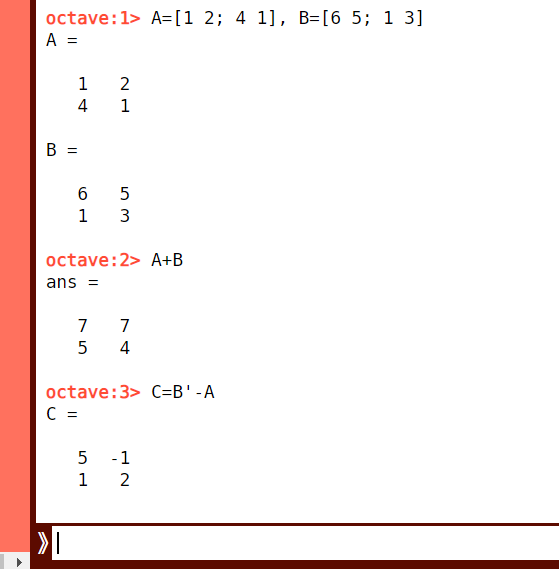

Matriisien peruslaskutoimitukset
Contents
Matriisien peruslaskutoimitukset¶
Matriisien peruslaskutoimituksiin kuuluvat matriisien yhteen- ja vähennyslasku sekä matriisin kertominen luvulla. Aivan kuten vektorienkin tapauksessa, matriisien kertominen toisella matriisilla on monimutkaisempi laskutoimitus ja käsitellään erikseen. Matriisien laskutoimitukset sujuvat helposti matriisilaskentaan erikoistuneella Octave-laskentaohjelmalla, johon myös tässä luvussa tutustaan.
Laskutoimituksia¶
Matriiseja voidaan laskea yhteen tai vähentää toisistaan, jos ne ovat samaa tyyppiä. Laskutoimitukset tehdään vastinalkioittain. Matriisien \(A\) ja \(B\) summan \(C=A+B\) alkio \(C_{ij}\) on matriisien \(A\) ja \(B\) vastaavien alkioiden summa, \(C_{ij}=A_{ij}+B_{ij}\). Vastaavasti erotukselle \(C=A-B\) pätee \(C_{ij}=A_{ij}-B_{ij}\).
Minkä tahansa kokoinen matriisi voidaan kertoa reaaliluvulla. Tällöin matriisin jokainen alkio kerrotaan kyseisellä luvulla.
Esim. Olkoon \(A=\begin{bmatrix}2&-3&5\\0&2&1\end{bmatrix}\) ja \(B=\begin{bmatrix}1&7&2\\3&-2&4\end{bmatrix}\). Laske \(A+B\) ja \(3A\).
Ratkaisu
\(A+B=\begin{bmatrix}2+1&-3+7&5+2\\0+3&2-2&1+4\end{bmatrix}=\begin{bmatrix}3&4&7\\3&0&5\end{bmatrix}\) ja
\(3A=\begin{bmatrix}3\cdot 2&3\cdot (-3)&3\cdot 5\\3\cdot 0&3\cdot 2&3\cdot 1\end{bmatrix}=\begin{bmatrix}6&9&15\\0&6&3\end{bmatrix}\).
Matriiseille on määritelty myös alkioittainen tulo eli Hadamardin tulo. Sitä merkitään matriisien välisellä ympyrällä \(A\circ B\). Matriisien \(A\) ja \(B\) alkioittaisen tulon \(C= A \circ B\) alkio \(C_{ij}\) on matriisien \(A\) ja \(B\) vastaavien alkioiden tulo, \(C_{ij}=A_{ij}\cdot B_{ij}\). Tätä laskutoimitusta tarvitaan vain harvoin. Hadamardin tulon voi laskea vain kahdelle samaa tyyppiä olevalle matriisille.
Esim. Laske matriisien \(A=\begin{bmatrix}2&-3&5\\0 & 2 & 1\end{bmatrix}\) ja \(B=\begin{bmatrix}1&7&2\\3 & -2 & 4\end{bmatrix}\) alkioittainen tulo.
Ratkaisu
\(A \circ B=\begin{bmatrix}2\cdot 1 & -3\cdot 7 & 5\cdot 2\\0\cdot 3 & 2\cdot(-2) & 1\cdot 4 \end{bmatrix}=\begin{bmatrix}2 & -21 & 10\\0 & -4 & 4\end{bmatrix}\)
Matriisien käsittely tietokoneella¶
Tällä opintojaksolla tutustutaan Octave-laskentaympäristöön. Octavea voi käyttää selaimessa tai sen voi asentaa omalle tietokoneelle. Octaven käyttö on ilmaista. Se noudattaa pääosin samoja komentoja kuin erittäin laajasti käytetty Matlab. Nykyään tosin matriisienkin käsittelyssä ollaan siirrytty enemmän Python-ohjelmointikieleen.
Octaveen voi syöttää matriiseja siten, että matriisin alkiot kirjoitetaan hakasulkuihin. Matriisin riviä vaihdetaan puolipisteellä. Samalla rivillä olevien alkioiden väliin laitetaan pilkku tai välilyönti. Matriisin transpoosi saadaan kirjoittamalla matriisin nimen perään merkin ‘, esimerkiksi matriisin \(A\) transpoosin \(A^T\) saa komennolla A’. Kun matriisille antaa jonkin nimen, sitä voi käyttää nimellä kutsumalla laskutoimituksissa. Jos matriisien tyypit eivät ole keskenään yhteensopivia ja laskua ei voida suorittaa, Octave antaa virheilmotuksen.
Esim. Matriisien \(A=\begin{bmatrix}1 & 2 \\ 4 & 1\end{bmatrix}\) ja \(B=\begin{bmatrix}6 & 5 \\ 1 & 3\end{bmatrix}\) laskutoimituksia:
Syötetään Octaveen matriisit komennolla: A=[1 2;4 1], B=[6 5;1 3]
Lasketaan \(A+B\) komennolla: A+B
Lasketaan \(B^T-A\) ja tallennetaan laskun tulos matriisiksi \(C\) komennolla: C=B’-A

Huom! Alkioittainen tulo \(A\circ B\) saadaan komennolla A.*B ja varsinainen matriisien kertolasku tapahtuu komennolla A*B
Matriisit tallentuvat Octaven käytön ajaksi muistiin. Jos haluaa poistaa jonkin matriisin, se tapahtuu komennolla clear, esimerkiksi “clear a” poistaa matriisin \(a\). Komento “clear” tai “clear all” poistaa muistista kaiken. Jos haluaa pyyhkiä taulun, jolla aiemmat laskutoimitukset näkyvät, se tapahtuu komennolla “clc”. Lähtökohtaisesti Octave tulostaa kaiken näkyviin. Jos haluaa vaikkapa tallentaa ison matriisin ilman, että se sotkee koko ruutua, tulee komennon perään laittaa puolipiste ; .
Octavessa voi kirjoittaa komentosarjoja ottamalla käyttöön tekstieditorin. Se onnistuu kirjautumalla käyttäjäksi esim. Google-tilin kautta. Tällöin voi ensin kirjoittaa kaikki haluamansa laskutoimituksen selkeäksi dokumentiksi, jonka sitten lopuksi suorittaa kerralla. Vaativampi laskenta ja datan käsittely tapahtuukin juuri tällä tavalla